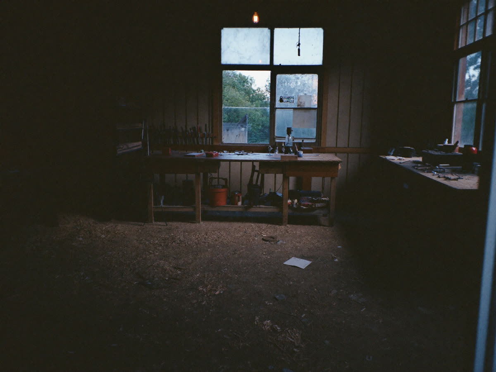

Warum findet mich bei Google niemand?
Die Website ist online, sieht gut aus, und trotzdem kommt über Google niemand. Das hat fast immer eine von fünf Ursachen.
Diese Frage steht am Anfang fast jedes Gesprächs. Die Website ist fertig, hat Geld gekostet, sieht ordentlich aus, und sie bringt keine einzige Anfrage. Manchmal seit Monaten, manchmal seit Jahren. Und weil niemand erklärt, woran es liegt, entsteht der Eindruck, Suchmaschinenoptimierung sei eine Art Glücksspiel, bei dem man eben Pech hatte.
Das ist sie nicht. In den allermeisten Fällen liegt es an einer von fünf Ursachen, und die lassen sich alle überprüfen, ohne dass Sie Geld ausgeben oder jemanden beauftragen müssen. Wir gehen sie in der Reihenfolge durch, in der sie am häufigsten vorkommen. Arbeiten Sie die Liste von oben nach unten ab: Die ersten beiden Punkte erklären einen Großteil der Fälle, und beide sind ohne großes Budget zu beheben.
Die Seiten sind nicht im Index
Bevor eine Seite überhaupt eine Position haben kann, muss Google sie kennen. Eine Seite, die nicht im Index steht, liegt nicht auf Platz 80 und auch nicht auf Platz 200. Sie existiert für die Suche schlicht nicht. Das klingt nach einem Anfängerfehler und ist trotzdem die häufigste Ursache überhaupt, weil man es der Seite von außen nicht ansieht: Sie lässt sich ganz normal im Browser aufrufen, alles funktioniert, nur Google sieht sie nie.
Die Prüfung dauert zwei Minuten. Geben Sie in die Google-Suche site:ihre-domain.de ein. Was dort nicht auftaucht, ist nicht im Index. Vergleichen Sie die Zahl der Treffer grob mit der Zahl Ihrer Seiten. Fehlen einzelne, ist das normal. Fehlen fast alle, haben Sie Ihre Ursache gefunden.
Dahinter stecken meist drei Dinge. Erstens eine Anweisung namens noindex, die während der Entwicklung gesetzt wird, damit die unfertige Seite nicht in der Suche landet, und die beim Livegang vergessen wurde. Zweitens eine Datei namens robots.txt, in der ein Eintrag aus der Bauphase ganze Bereiche für Suchmaschinen sperrt. Drittens Seiten, auf die intern kein einziger Link zeigt: Google folgt Links, und was nirgends verlinkt ist, wird auch nicht gefunden.
Alle drei sind Einstellungen, keine Baustellen. Wer Zugriff auf die Website hat, behebt sie an einem Nachmittag. Danach dauert es je nach Größe der Seite ein paar Tage bis wenige Wochen, bis Google nachzieht.
Es fehlt die Seite zum Begriff
Google rankt keine Unternehmen, sondern einzelne Seiten. Dieser Satz klingt beiläufig und ist der Kern des Problems. Wer fünf Leistungen anbietet, aber nur eine Seite hat, auf der alle fünf in Stichpunkten stehen, hat für keine davon eine Seite, die die Frage eines Suchenden vollständig beantwortet. Google muss dann entscheiden, worum es auf dieser Seite eigentlich geht, und entscheidet im Zweifel: um nichts Bestimmtes.
Die typische Konstellation sieht so aus: Startseite, eine Seite Leistungen, Über uns, Kontakt. Vier Seiten für ein Unternehmen, das in Wahrheit acht verschiedene Dinge anbietet, nach denen auch acht verschiedene Begriffe gesucht werden. Jede dieser acht Suchen führt zu einem Wettbewerber, der eine eigene Seite dafür gebaut hat.
Die Lösung ist unspektakulär und mühsam: eine Seite je Begriff, der Anfragen bringt. Nicht je Leistung, die im Katalog steht, sondern je Begriff, der tatsächlich gesucht wird. Diese Seiten müssen keine Textwüsten sein. Sie brauchen eine Überschrift mit dem Begriff, einen klaren Einstieg, den konkreten Nutzen, die wiederkehrenden Fragen dazu und einen sichtbaren nächsten Schritt. Wie das im Aufbau aussieht, steht unter OnPage und Webdesign.

Die Begriffe sind zu groß gewählt
Der dritte Fall betrifft Betriebe, die alles richtig gemacht haben und trotzdem nicht vorkommen: Sie haben sich einen Begriff vorgenommen, bei dem sie gegen Wettbewerber antreten, die seit zehn oder fünfzehn Jahren daran arbeiten. Wer bei "Rechtsanwalt" auf Seite 1 will, tritt gegen Kanzleien an, die ein Vielfaches an Inhalten, Verweisen und Historie mitbringen. Das ist kein Qualitätsproblem, sondern eine Frage des Vorsprungs.
Der Ausweg heißt, genauer zu werden. "Fachanwalt Arbeitsrecht Kündigung Göppingen" wird seltener gesucht als "Rechtsanwalt", aber es wird von jemandem gesucht, der ein konkretes Problem hat und heute jemanden braucht. Solche längeren Suchanfragen machen in der Summe den größten Teil aller Suchen aus, und bei ihnen ist der Wettbewerb oft überschaubar bis nicht vorhanden.
Die Rechnung geht auch wirtschaftlich auf. Hundert Besucher, die genau Ihre Leistung in genau Ihrem Einzugsgebiet gesucht haben, sind mehr wert als zehntausend, die sich allgemein umsehen. Für kleine und mittlere Unternehmen ist das fast immer der richtige Einstieg, und die großen Begriffe kommen später von selbst dazu, wenn die Seite insgesamt an Gewicht gewinnt.
Ob Sie sich zu viel vorgenommen haben, sehen Sie in einer Minute: Geben Sie Ihren Wunschbegriff bei Google ein und sehen Sie sich an, wer auf den ersten fünf Plätzen steht. Sind das bundesweite Portale, Vergleichsseiten und Unternehmen mit mehreren hundert Mitarbeitern, ist dieser Begriff für den Anfang die falsche Wahl. Stehen dort Betriebe in Ihrer Größenordnung, ist er erreichbar. Diese Einschätzung gehört zu jedem SEO Audit dazu, weil sie darüber entscheidet, ob die Arbeit der nächsten Monate überhaupt ein Ziel hat.
Die lokale Präsenz fehlt
Bei jeder Suche mit Ortsbezug zeigt Google zuerst eine Karte mit drei Einträgen, dazu Bewertungen, Öffnungszeiten und Telefonnummer. Erst darunter beginnen die normalen Ergebnisse. Für Betriebe mit Kundschaft aus der Umgebung passiert in diesen drei Zeilen ein großer Teil der Kontaktaufnahme, und zwar ohne dass jemand die Website überhaupt besucht: Viele rufen direkt aus dem Eintrag an.
Wer dort nicht steht, verliert diese Kundschaft vollständig, egal wie gut die Website ist. Und die Hürde ist niedrig: Der Eintrag ist kostenlos. Die häufigsten Versäumnisse sind eine falsch gewählte Hauptkategorie, fehlende Leistungen, keine echten Fotos und voneinander abweichende Angaben zu Name, Adresse und Telefonnummer zwischen Website, Eintrag und Branchenverzeichnissen.
Gerade der letzte Punkt wird unterschätzt. Wenn im Eintrag "Str." steht, auf der Website "Straße" und im alten Branchenbuch noch die vorherige Telefonnummer, muss Google entscheiden, welche Angabe stimmt, und wird im Zweifel vorsichtig. Welche Felder im Einzelnen zählen, steht im Beitrag Google Unternehmensprofil richtig einrichten.
Zu langsam auf dem Handy
Der größte Teil der Suchen passiert heute auf dem Telefon, oft unterwegs und mit mäßiger Verbindung. Eine Seite, die dort drei Sekunden braucht, bei der man horizontal scrollen muss oder auf der die Telefonnummer nicht antippbar ist, verliert Besucher, bevor sie etwas gesehen haben. Der Betreiber merkt davon nichts, weil er die Seite am Schreibtisch mit schnellem Anschluss aufruft.
Diese Abbrüche sind für Google ein Signal. Wer zur Ergebnisliste zurückkehrt und den nächsten Treffer anklickt, sagt damit, dass die Seite die Frage nicht beantwortet hat. Passiert das oft genug, wirkt es sich auf die Position aus. Was dabei genau gemessen wird, steht im Beitrag Core Web Vitals, kurz erklärt.
Die größten Gewinne liegen fast immer an zwei Stellen: bei Bildern, die in Originalgröße ausgeliefert werden, obwohl sie auf dem Telefon auf Daumengröße schrumpfen, und bei Skripten, die beim Aufruf mitladen und die niemand vermisst, wenn man sie entfernt. Beides ist Handwerk und braucht keine neue Website.
Machen Sie die Probe aufs Exempel, und zwar nicht im Büro: Rufen Sie Ihre Seite auf dem Telefon im Mobilfunknetz auf, draußen, bei normalem Empfang. Zählen Sie, wie lange es dauert, bis Sie das erste Mal etwas Nützliches sehen. Versuchen Sie dann, mit einer Hand die Telefonnummer anzutippen. Was Ihnen dabei auffällt, fällt jedem Besucher auf, der zum ersten Mal auf Ihrer Seite landet.
Fazit
Gehen Sie die fünf Punkte in dieser Reihenfolge durch. Prüfen Sie zuerst mit site:ihre-domain.de, ob Ihre Seiten überhaupt im Index stehen. Sehen Sie danach nach, ob es für jeden Begriff, der Ihnen Aufträge bringen soll, eine eigene Seite gibt. Prüfen Sie, ob Sie sich nicht zu große Begriffe vorgenommen haben. Füllen Sie Ihren Eintrag bei Google vollständig aus. Und rufen Sie Ihre eigene Seite einmal auf dem Telefon im Mobilfunknetz auf, nicht im WLAN.
In den meisten Fällen finden Sie dabei selbst, woran es liegt. Wenn Sie es lieber schriftlich und von außen haben möchten, bekommen Sie das in unserer kostenlosen SEO-Analyse: welche Ihrer Seiten im Index sind, für welche Begriffe Sie heute gefunden werden, wer vor Ihnen steht und woran es liegt.


Lernen wir uns kennen.
15 Minuten am Telefon oder per Video. Danach wissen Sie, ob und wie Social Media für Ihren Betrieb funktioniert.